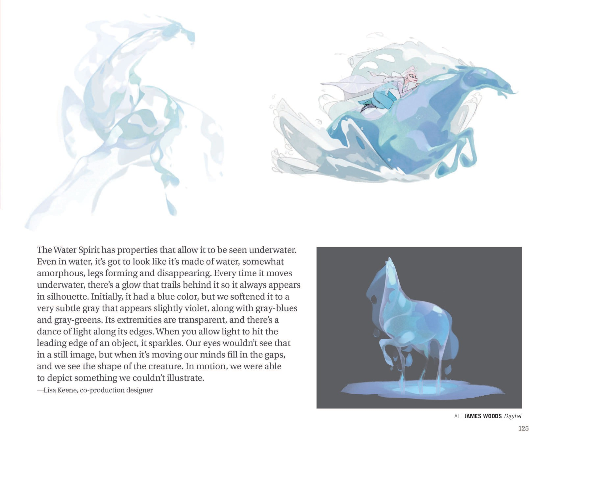

设定集提出水的科学隐喻："水溶解吸收经过的一切、承载历史"，"我们所有的水即曾有或将有之水"——这是艾莎与历史/记忆联结的核心隐喻。衍生小说《Polar Nights》中，艾莎可"从水中提取记忆"，并研习把 Ahtohallan 的记忆"重现"成冰影给安娜看；而 Olaf 与动物因"水有记忆"与永冻体对记忆窃取免疫。（来源：《电影2艺术设定集》· 第122页） （来源：《Polar Nights》· 第1、9章）
电影2把水写成会"记事"的介质。设定集借科学隐喻说明：水分子循环往复、溶解并携带流经的一切，所谓"我们所有的水即曾有或将有之水"，意味着每一滴当前的水都封存着过往的信息。对艾莎而言，这正是她能与历史对话的通道——她的魔法本就由水构成，而阿塔霍兰作为"充满记忆的河"，正是这层隐喻的具象化：顺着水流，她能读到母亲 Iduna、祖父 Runeard 乃至北境的往事。（来源：《电影2艺术设定集》· 第122页）
《Polar Nights》把这一能力写成可操练的技艺。艾莎学会从水中"提取记忆"：她以指尖轻触水面或冰面，让封存其中的片段浮起，再研习把阿塔霍兰的记忆"重现"成冰影（ice visions），放给安娜观看，使妹妹也能亲见母亲救起 Agnarr 的那一夜。这种"以水为书、以冰为幕"的魔法，本质就是"水有记忆"的延伸应用——记忆不是抽象概念，而是可被施法者检索、投影、分享的物质数据。（来源：《Polar Nights》· 第4章（记忆重现））
"水有记忆"还解释了《Polar Nights》中的一个关键设定：由雪与冰构成的 Olaf、以及北境的冰雪动物，因为自身就是"记忆的载体"，反而对 draugr（亡者军团）的记忆窃取诅咒免疫——它们无法被夺走"不曾有过的活人记忆"，也因水的同质性难被改写。这与艾莎在阿塔霍兰近距离接触记忆会被"冻结"形成对照：水既是记忆的保险箱，也是触碰真相时危险的边界。（来源：《Polar Nights》· 第9章）
回到魔法本质：艾莎的冰是水的元素形态，"水有记忆"因此不是外挂设定，而是她力量的底层逻辑之一。她能安抚洪水、冻结 Dark Sea、在冰川中唤出记忆，靠的都是与"载有历史的水"同频。换言之，艾莎越强，越能听懂水讲述的过去——这也正是她注定成为第五灵、走向阿塔霍兰的根本原因。